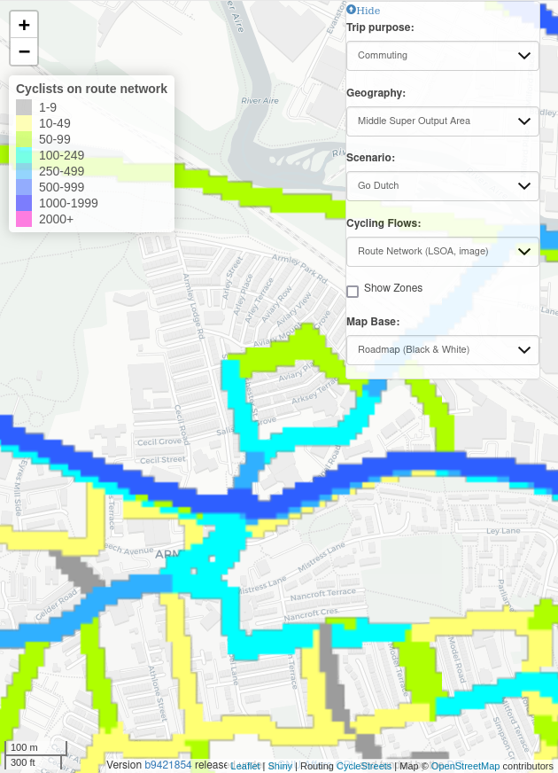

To contribute to the papers written as quarto documents (with .qmd extensions) like this one, we recommend using the Quarto extension for VS Code. You can go into the visual editor with the following shortcut:
Ctrl+Shift+F4
You can then add citations with Ctrl+Shift+F11 and benefit from Quarto’s other features for academic writing.
Abstract
Route network datasets are central to transport models as key inputs and outputs. The complexity of route network inputs from sources such as OpenStreetMap has increased over time, enabling more precise modelling of sustainable modes such as walking and cycling. However, this complexity can affect the visualisation of model results. A common issue is the presence of multiple parallel ways on the same corridor. This can lead to incorrect traffic flow values inferred from visual inspection of results, misinterpretation of model outputs and, potentially, investment in the wrong places. To address this challenges, we present and compare two methods for simplifying route network datasets: 1) image skeletonization and 2) Voronoi diagram-centreline identification approaches. These methods have real-world applications in urban mobility and green transportation, as illustrated by the use of the simplified network results in the Transport for Scotland funded Network Planning Tool, which is publicly available at www.nptscot.scot. Being developed with open data and open-source software, these methods are not only reproducible but also adaptable, enbabling their use in new contexts.
1 Introduction
Datasets representing route networks are important in every stage of modern data-driven transport planning. A wide range of data types can be used as inputs and outputs transport models, including route network datasets, origin-destination data, movement patterns captured by global positioning systems (GPS), and information on surface characteristics derived from remote sensing imagery.1 Of these, route network datasets are unusual because they are commonly used as both inputs and outputs of transport models.
As highlighted in the field of transport geography, network data models serve as digital representations of transportation networks, crucial for planning and operational purposes. These models, enriched through graph theory, enclosed the complex, multi-modal nature of transportation data across various jurisdictions. This complexity is particularly relevant when considering the enhancement of route network datasets for different use cases, offering widely applicable benefits.
This raises questions about what transport network datasets are, and how they can be optimized for more effective decision-making. An intuitive definition is that route network datasets are digital representations of footpaths, cycleways, highways and other ways (to use the OpenStreetMap terminology) along which people and goods can travel. More formally, transport network datasets are spatial networks “for which the nodes are located in a space equipped with a metric”, space typically being two-dimensional space and the main metric being Euclidean (or weighted Euclidean) distances (Barthélemy 2011). Transport networks must contain spatial information on the coordinates of vertices (points along ways) and edges that connect them (the straight lines between vertices representing ways). Transport networks can also contain ‘attribute data’ such as the type of way (e.g. road, rail, cycle), its physical characteristics (e.g. is lit at night), and usage data, e.g. the amount of daily traffic using each segment. As inputs, route networks typically represent road or other transport networks along which vehicles travel. When generated as model outputs, they are typically used to visualize metrics such as flow over different time periods on transport networks at the segment level (Sutton 1998).
File formats for representing route networks include Transportation Network Test Problem files (TNTP and stored as a series of .tntp plain text files, examples of which can be found in github.com/bstabler/TransportationNetworks), .DAT files used by the proprietary SATURN transport modelling system and XML-based .osm or .pbf files that encode OpenStreetMap data. Geographic file formats implementing the ‘Simple Features Access’ standard developed by the Open Geospatial Consortium (OGC), such as .shp and .geojson, can also be used to represent route networks.
With the increasing availability of high resolution geographic datasets and performant hardware and software, people (e.g. via OpenStreetMap) and national mapping agencies are mapping in more and more detail. Sustainable transport planning can benefit from the influx of data, but excess complexity and intricacy of street network geometries can lead to problems in analyzing and visualizing transportation networks. A clear and intuitive visual representation is crucial for identifying issues such as bottlenecks, congestion hotspots, and areas of poor accessibility. Consequently, the necessity for network simplification becomes evident, aligning with wider ‘map generalization’ methods for pre-processing datasets depending on the scale of analysis (Sutton 1998). 25 years since Sutton’s paper on the topic, simplification of networks for transport planning and other applications remains an unsolved challenge.
Vector geometry simplification methods include Douglas-Peucker and Visvalingam-Whyatt algorithms (Liu et al. 2020; Magalhaes et al. 2014). These methods reduce the number of vertices in a line or polygon features. While effective in preserving the overall shape and geographical accuracy, this method struggles to reduce network complexity, as shown in Section 4. Vector smoothing approaches, including the use of Bezier curves (Pradhan and Pradhan 2023) and Kernel-based smoothing (Duong 2022), can create more visually appealing lines or polygons, but do not reduce the number of vertices and so are of limited use for simplifying transport networks.
Recent progress towards solving the knotty problem problem of network simplification for transport planning has included methods for the automatic detection of ‘face artifacts’ (Fleischmann and Vybornova, n.d.) and removal of ‘slivers’ to generate simplified representations of ‘street blocks’ (Grippa et al. 2018). However, these methods tend to be ‘all or nothing’ and do not provide flexibility in terms of the level of simplification or which features are removed.
Flexibility is important due to the wide range of transport planning use cases. Some transport planning use cases require zoomed-in, geographically accurate and complex representations of transport networks, e.g. maps for junction design may have scales of 1:1000. Other use cases, such as strategic network planning tools and ‘planning support systems’ (Page et al. 2020), typically involve zoomed-out representations of street networks at scales of 1:10,000+ beyond which dual carriageways are not relevant and can distort visualisation of networks.
The aim of this paper is to articulate the problem of complex route networks, present solutions with implementations in open source software for reproducible research, and describe applications of the methods to support more effective transport planning. Section 2 outlines the problem of complex route networks. Section 3 describes the input datasets. Section 4 presents methods for route network simplification alongside results based on the example datasets. In Section 6 we discuss the results and outline future work.
2 Problem definition
Morgan and Lovelace (2020) presented methods for combining multiple overlapping routes into a single route network with non-overlapping linestrings for visualisation, implemented in the function overline(). The approach takes overlapping linestrings representing multiple routes and combines them into a single network with non-overlapping linestrings. The approach has been used to visualise large transport networks, informing investment decisions in transport planning internationally. However, the ‘overline’ approach, without further processing, has limitations:
It does not remove redundant vertices, which can lead to large file sizes and slow rendering.
Parallel ways that are part of the same corridor are not merged into a single way, resulting in outputs that are difficult to interpret.
The final point is most relevant to the present paper. An example of the issue is shown in Figure 1 from the Propensity to Cycle Tool for England (PCT), with segment values representing daily commuter cycling potential flows (Lovelace et al. 2017). The left panel shows Otley Road with a flow value of 818 (Figure 1 (a)). The right panel, by contrast, shows three parallel ways parallel to Armley Road with flow values of 515 (shown), 288 and 47 (values not shown) (Figure 1 (b)). Although this section of Armley road has a higher cycling potential than the section of Otley Road shown (515 + 288 + 47 > 818), this is not clear from the visualisation.
Figure 1: Illustration of issues associated with route network-level results containing multiple parallel ways on the same corridor: it is not clear from the visualisation that the corridor shown in the right hand figure has greater flow than the corridor shown in the left. Source: open access Propensity to Cycle Tool results available at www.pct.bike.
A subsequent step described by Morgan and Lovelace (2020) is to post-process the geographic representation of the transport network into a raster image, which can be used to visualise the network. The ‘rasterisation’ stage can tackle some of the issues associated with multiple parallel ways, but introduces new issues, as shown in Figure 2.

Figure 2: Rasterised network results for the same corridors shown in Figure 1. Note the visual artefacts such as ‘staircase’ effects and overlapping values resulting from parallel lines along Armley Road (right panel). Source: open access Propensity to Cycle Tool results available at www.pct.bike.
The methods presented in this paper are designed to take a complex network as an input and output a simplified network, while preserving the spatial structure of the network and relevant attributes. By reducing duplicated parallel lines and other intricacies, the outputs can enable easier-to-interpret visualisations of transport behaviour on the network patterns and behaviors.
3 Data
In this study, we focus on two exemplary input datasets, as outlined in Table 1, both of which are sourced from the Propensity to Cycle Tool (PCT) which in turn is based on OpenStreetMap (OSM). Each input dataset illustrates varying levels of complexity. This variety allows us to explore and understand the nuances involved in simplifying route networks for more efficient urban transport planning.
Table 1: Input datasets used in this paper.
Network
N. segments
Description
Source
Otley Road
21
A corridor in Leeds represented by a single centreline
Propensity to Cycle Tool (derived from OSM)
Armley Road
27
A road in Leeds represented by multiple parallel ‘braided’ linestrings
Propensity to Cycle Tool (derived from OSM)
The selection of these two datasets, Otley Road and Armley Road, are illustrated in Figure 3. They represent the spectrum of complexities found in urban route networks, from the simple to the intricate. By analyzing these contrasting road structures, we aim to develop a comprehensive approach to route network simplification, catering to the varying demands of urban transport systems.
Figure 3: Illustration of the size and level of spatial complexity of the input datasets.
4 Methods
There are two main challenges that need to be overcome to simplify transport networks, in a way that preserves their value:
Simplifying the geometry
Assigning attributes to the simplified network
Sections Section 4.1 to Section 4.3 describe methods for simplifying the geometry of the network. The key contributions of the paper are the novel methods of image skeletonization, presented in Section 4.2, and simplification with Voronoi diagrams to identify central lines, covered in Section 4.3. To make use of simplified networks in transport planning, it is also necessary to assign attributes to the simplified network. This is covered in Section 4.4.
4.1 Topology-preserving simplification
Topology-preserving simplification reduces the number of vertices in a linestring while preserving the topology of the network. As shown in top panel of Figure 4, topology-preserving simplication can reduce the number of edges, but fails to merge parallel lines in complex geometries, as shown in the the bottom panel in Figure 4.
Figure 4: Illustration of topology-preserving simplification, using the mapshaper JavaScript package. The % values represent the “percentage of removable points to retain” argument values used in the simplification process.
4.2 Simplification via skeletonization
4.2.1 Create a projected combined buffered geometry:
In both approaches, the network simplification process initiates with the generation of buffered geometries, achieved using the get_geometry_buffer function. For our purposes, we have chosen a buffer size of 8 meters. These buffered geometries are essential for spatial analyses as they extend the influence area of each geometry, thereby facilitating the identification and processing of geometries that intersect or lie adjacent to each other in subsequent stages of the analysis.
Figure 5 displays the buffered versions of the Otley Road (on the left) and Armley Road (on the right) networks. It visually illustrates how the application of an 8-meter buffer transforms the initial geometries of these roads. This representation is pivotal for understanding the spatial extension and the overlapping areas created by the buffer zones around each road network, setting the stage for subsequent analysis and simplification processes.
Figure 5: Buffered versions of the Otley Road (left) and Armley Road (right) networks.
In Figure 6, truncated and segmented buffer geometries of the Otley Road (left) and Armley Road (right) networks are presented. This visualization demonstrates the process of cutting and segmenting the buffer geometries. It highlights the transformations from the initial buffered geometries to a more segmented and manageable form, preparing them for further analysis and simplification steps.
Figure 6: Truncated and segmented buffer geometries of the Otley Road (left) and Armley Road (right) networks.
Figure 7 shows the segmented buffer geometries of the Otley Road (left) and Armley Road (right) networks. It effectively highlights the contrast between the more intricate and the simpler sections within these networks.
Figure 7: Segmented buffer geometries of the Otley Road (left) and Armley Road (right) networks.
4.2.2 Skeletonization
In the skeletonization process, the buffered lines of the network are first transformed into a raster image. Subsequently, this raster image is processed through a thinning algorithm to produce a skeletal representation of the original network. This skeletal structure preserves the overall extent and connectivity of the initial network, with a central line that closely follows the contours of the combined buffered area.
To correlate the points in the buffered geometry with their respective positions in the raster image, we implement an affine transformation. This transformation is scaled to ensure that the projected coordinate geometry of the network aligns accurately with the corresponding dimensions of the scaled raster image. Through this process, we maintain the spatial integrity and relational positioning of the network elements within the simplified raster format.
4.2.3 Affine transforms
The affine transformations for Rasterio and Shapely are demonstrated with a scaling factor of 2.0. The Rasterio transform applies a scale and translation in a specific order, while the Shapely transform follows a different order for scaling and rotation, as illustrated in Table Table 2.
Table 2: Rasterio and Shapely affine transformation matrices for the Otley Road network.
(a) Rasterio affine transformation matrix.
0.5
0
426757
0
-0.5
437646
0
0
1
(b) Shapely affine transformation matrix.
0
-0.5
426757
0.5
0
437646
In these matrices, the first two columns represent the scaling and rotation components, while the last column represents the translation. The Rasterio transform matrix first scales the coordinates by 0.5 and then translates them, whereas the Shapely transform first rotates the coordinates and then applies the scaling.
4.2.4 Skeletonize the buffer to a point geometry
A scaled affine transformation is applied to align the projected coordinate geometry with the scaled raster image. This transformation adjusts the geometry to match the raster’s scale and orientation. Following this, the raster image undergoes a cleaning process to eliminate small holes that often appear in areas where buffered lines run parallel or intersect at shallow angles, resulting in raster representations illustrated in Figure 8. This step ensures a more coherent and accurate representation in the raster image.
Figure 8: Rasterized versions of the Otley Road (left) and Armley Road (right) networks, with post processing to remove small holes.
The image undergoes a thinning process, yielding a skeletal raster image as the result. This skeletonized image effectively captures the essential structure and layout of the original network, as illustrated in Figure 9.
Figure 9: Skeletonized versions of the Otley Road (left) and Armley Road (right) networks.
The rasterized skeletal image is then converted back into point geometry, completing the vector -> raster -> vector geometry transformation process.
The challenge with this approach is that instead of generating points situated on the simplified network, it returns a set of points rather than line geometries. This necessitates the inference of line geometry from the associated set of points. Transforming a skeletonized point set into a simplified line geometry is arguably the most complex step in creating a simplified network.
The process of transforming point geometry into line geometry involves identifying adjacent points based on proximity within the raster coordinate system, usually within a 1x1 pixel square. After adjacent points are identified, line segments are created by connecting these points. The final and crucial step is the amalgamation of these individual line segments. This combination results in a continuous line geometry that represents the simplified network. To visualize the simplified network in its original spatial context, the reverse affine transformation is applied. This step reverts the network back to its original coordinate system, aligning the simplified geometry with the original spatial framework. The resulting simplified network is illustrated in Figure 10.
Figure 10: Simplified versions of the Otley Road (left) and Armley Road (right) networks, transformed back into line geometry.
4.2.5 Knots
Knots in the network are multiple short segments at intersections, resembling tangled knots. To remove these features of networks, which add complexity that is rarely relevant for strategic transport planning, short segments are clustered together, and a central point for each cluster is determined. The end-points of longer lines that connect to these segment clusters are then realigned to the cluster’s central point. This process effectively removes the knot-like appearance. As with previous steps, the reverse affine transformation is applied to the simplified network before plotting, ensuring the network is represented in its original spatial context, as illustrated in Figure 11.
Figure 11: Zoomed in versions of road structure with knots (left), and with knots removed (right) shown in Figure 11.
4.2.6 Primal network
There are circumstances where it might be beneficial to view a “primal” network, which is exclusively composed of direct lines connecting start and end points. This primal network represents an extreme form of simplification, of great potential value in situations in which the network’s overall structure and compression ratios are priorities. The primal networks for the Otley Road and Armley Road networks are illustrated in Figure 12.
Figure 12: Primal networks for the Otley Road (left) and Armley Road (right) networks.
4.3 Simplification via Voronoi polygons
In this approach, the network lines are first buffered as described above. The edges of these buffers are then segmented into sequences of points. From these sequences, a centre-line is derived based on a set of Voronoi polygons that cover these points. This approach facilitates the creation of a simplified network representation by focusing on the central alignment of the buffered lines.
4.3.1 Boundary Segmentation
In Figure 13, the boundary of the buffered input geometry (otley_geometry) is calculated and then simplified. This process yields a simplified GeoSeries consisting of LineStrings, all of which are precisely aligned with the specified coordinate reference system (CRS). This step illustrates the transformation from the initial buffer geometries, named ‘otley_buffer’ and ‘Armley_buffer’, to their more refined and simplified versions, ‘otley_boundary’ and ‘Armley_boundary’, respectively. These refined boundaries provide an accurate representation and visualization of the exact limits of the spatial objects involved.
Figure 13: Simplified boundaries of the Otley Road (left) and Armley Road (right) networks.
Figure 14 showcase the conversion of segmented LineString geometries into point geometries. This essential transformation forms the basis for constructing Voronoi diagrams.
Figure 14: Detail segmented boundaries of the Otley Road (left) and Armley Road (right) networks.
Figure 15, the process of converting the segmented LineString geometries into point geometries is illustrated. This transformation is essential for the creation of Voronoi diagrams.
Figure 15: Detail point segement of the Otley Road (left) and Armley Road (right) networks.
4.3.2 Voronoi diagram
In Figure 16, the generation and clipping of the corresponding Voronoi diagrams to the bounds of the input geometry is depicted.
Figure 16: Clipped Voronoi diagrams of the Otley Road (left) and Armley Road (right) networks.
Figure 17 shows the Voronoi lines that are completely enclosed within the buffer geometry and are situated at a distance of less than half the buffer’s width from the buffer edge. This selective visualization of Voronoi lines effectively demonstrates the method precision in capturing and representing the central alignment of the transport network within its buffered confines.
Figure 17: Voronoi diagram lines with lines that are completely within the buffer geometry and less than half-a-buffer-width from the buffer edge.
4.3.3 Voronoi simplified network
The center-line network depicted in Figure 18 is created through a process that involves the removal of knot-like features from the resultant network. This step refines the geometry of network, ensuring a more streamlined and accurate representation of the transport routes.
Figure 18: Simplified versions of the Otley Road (left) and Armley Road (right) networks.
Figure 19 illustrates the primal network derived from the Voronoi approach. This representation highlights the fundamental structure of the network, showcasing a simplified and efficient layout that results from the Voronoi-based simplification process and how the primal network captures the essential connectivity and layout of the transport routes.
Figure 19: Primal networks for the Otley Road (left) and Armley Road (right) networks.
4.4 Joining route networks
After generating a simplified network using the methods described in the previous sections or through an alternative approach, the next crucial step involves transferring attribute values from the detailed network to the simplified one. This process is commonly referred to as ‘conflation’ and ‘integration’. Conflation is essential because while the source file (detailed network) might be rich in attributes like street names, address ranges, and zip codes, it may lack positional accuracy. Conversely, the target file (simplified network) is likely to be positionally precise but deficient in detailed attributes. As noted by (Sutton 1998), network data integration encompasses two key aspects: the geometric integration, involving the link and node feature elements, and the integration of attributes such as highway data. In our context, the purpose of the joining stage is to merge the detailed attributes from the source network onto the geometrically simplified target network. This ‘joining’ step is vital for using simplified networks as the basis for presenting model outputs generated on a complex network in a easy-to-interpret form.
The process is analogous to joining two datasets based on a common ‘key’ variable. In this case there is no definitive key, meaning that network joining can be regarded as a ‘fuzzy’ or ‘keyless’ join process (Suri et al., n.d.; Wachowicz and Mrozek 2019): as with the network simplification steps outlined above, the user must select joining parameters to maximise the accuracy of the join. The simplified (typically denoted ‘x’) object can also be referred to as the ‘target’ object, following the terminology used to describe database and ‘spatial similarity’ joins (Ballesteros, Cary, and Rishe 2011). There are at least a couple of implementations of network joining approaches in open source software: the rnet_merge() function in the stplanr R package (Lovelace, Ellison, and Morgan 2019), and the rnetmatch Rust crate which has binding to R and (soon) Python. The details of network joining methods, algorithms and implementations are outside the scope of this paper, see the documentation associated with the projects mentioned above for more information.
5 Evaluation of Proposed Route network simplification
In this section, we delve into the practical application of our proposed route network simplification techniques, focusing on a complex urban road network situated in the heart of Edinburgh. The key characteristics of the Edinburgh city center are detailed in Table 3.
Table 3: Characteristics of Datasets: Edinburgh city centre and the Doncaster rail network.
Dataset
GeometryType
NumberOfSegments
NumberOfNodes
Complexity
Edinburgh City Centre
LineString
1144
4603
5265832
Figure 20 illustrate various stages of network simplification, providing a comparative view of the impact of our methodology.
Input figure presents the initial input geometries for each location, serving as the baseline for comparing subsequent simplification stages.
Skeletonized figure shows the results of the skeletonization process, reducing the networks to their fundamental linear structures.
Voronoi figure display the outcomes of applying the Voronoi diagram-based simplification, focusing on the central alignment of the routes.
Primal Skeletonized demonstrates the networks post-application of a primal approach to the skeletonized data, offering insights into the primary routes and connections.
Primal Voronoi exhibits the results of applying a primal approach to the Voronoi-simplified networks, highlighting the straightforward paths within the Voronoi framework.
Figure 20: Matrix of Route Network Simplification Stages across Armley, Edinburgh, and Doncaster Rail.
Figure 21 presents the comparison results, showcasing the Edinburgh road network simplified by the proposed method. It is observed that the attribute value from the original network has been correctly transferred to the simplified network via a sum calculation process. This comparison between the original and simplified Edinburgh Road Networks demonstrates the effectiveness of the proposed simplification techniques in maintaining the essential characteristics of the network while reducing its complexity.
Figure 21: Comparasion of Orginal Edinburgh Road Network (Up) and Simplied Edinburgh Road Network (Down).
6 Discussion and Conclusion
In this study, we have explored the complexities of urban route networks and the pressing need for their simplification to enhance transport planning efficiency. The research centered around the application and comparison of two methods for route network simplification: image skeletonization and Voronoi diagram-centreline identification. Through the analysis of two diverse datasets, Otley Road and Armley Road, we not only demonstrated the utility and efficacy of these methods in managing different levels of network complexities but also proposed a meticulous process for efficiently merging attributes from a complex network to a simplified one. This process, complemented by a rigorous “sanity” check, ensures that the essential characteristics of the original network are accurately retained, thereby upholding the integrity and effectiveness of transport planning based on these simplified models.
6.1 Discussion
The results obtained from applying these methods have highlighted several key insights. First, the importance of maintaining the integrity and topological accuracy of the original network in the simplification process cannot be overstated. Both methods successfully reduced the complexity of the network representations while preserving essential spatial and connectivity characteristics. This balance is crucial for ensuring that the simplified networks remain true to their real-world counterparts, thus maintaining the reliability of transport planning models and decisions based on these models.
Furthermore, the comparative analysis of the two methods revealed their respective strengths and potential applications. The image skeletonization approach excelled in producing more streamlined network representations, particularly effective in contexts where a high-level overview of the network is required. On the other hand, the Voronoi diagram-centreline identification method provided a more nuanced simplification, capturing the central alignment of the route networks, making it suitable for detailed analysis and planning at a more granular level.
6.2 Conclusion
Conclusively, the study underscores the significance of route network simplification in the transport planning. The methodologies tackle the increasing intricacy of urban route networks. By simplifying these networks, we can achieve more efficient and actionable insights for urban transport planning. This not only aids in better visualization and interpretation of transport models but also harmonizes the complexity of urban networks with the clarity needed for effective planning and decision-making.
7 References
Ballesteros, Jaime, Ariel Cary, and Naphtali Rishe. 2011. “SpSJoin: Parallel Spatial Similarity Joins.” In, 481484. GIS ’11. New York, NY, USA: Association for Computing Machinery. https://doi.org/10.1145/2093973.2094054.
Duong, T. 2022. “Statistical Visualisation for Tidy and Geospatial Data in r via Kernel Smoothing Methods in the Eks Package.”arXiv Preprint arXiv:2203.01686.
Fleischmann, Martin, and Anastassia Vybornova. n.d. “A Shape-Based Heuristic for the Detection of Urban Block Artifacts in Street Networks.”
Grippa, Taïs, Stefanos Georganos, Soukaina Zarougui, Pauline Bognounou, Eric Diboulo, Yann Forget, Moritz Lennert, Sabine Vanhuysse, Nicholus Mboga, and Eléonore Wolff. 2018. “Mapping Urban Land Use at Street Block Level Using OpenStreetMap, Remote Sensing Data, and Spatial Metrics.”ISPRS International Journal of Geo-Information 7 (7): 246. https://doi.org/10.3390/ijgi7070246.
Liu, B., X. Liu, D. Li, Y. Shi, G. Fernandez, and Y. Wang. 2020. “A Vector Line Simplification Algorithm Based on the Douglas–Peucker Algorithm, Monotonic Chains and Dichotomy.”ISPRS International Journal of Geo-Information 9 (4): 251.
Lovelace, Robin, Richard Ellison, and Malcolm Morgan. 2019. Stplanr: Sustainable Transport Planning.
Lovelace, Robin, Anna Goodman, Rachel Aldred, Nikolai Berkoff, Ali Abbas, and James Woodcock. 2017. “The Propensity to Cycle Tool: An Open Source Online System for Sustainable Transport Planning.”Journal of Transport and Land Use 10 (1). https://doi.org/10.5198/jtlu.2016.862.
Magalhaes, S. V. de, M. V. Andrade, W. R. Franklin, and W. Li. 2014. “An Efficient Map Generalization Heuristic Based on the Visvalingam-Whyatt Algorithm.”
Morgan, Malcolm, and Robin Lovelace. 2020. “Travel Flow Aggregation: Nationally Scalable Methods for Interactive and Online Visualisation of Transport Behaviour at the Road Network Level.”Environment & Planning B: Planning & Design, July. https://doi.org/10.1177/2399808320942779.
Page, Jessica, Ulla Mörtberg, Georgia Destouni, Carla Ferreira, Helena Näsström, and Zahra Kalantari. 2020. “Open-Source Planning Support System for Sustainable Regional Planning: A Case Study of Stockholm County, Sweden.”Environment and Planning B: Urban Analytics and City Science 47 (8): 1508–23. https://doi.org/10.1177/2399808320919769.
Pradhan, A., and M. P. Pradhan. 2023. “A Modified Bezier Curve Technique for Automatic Reconstruction of Broken Contour Lines Extracted from a Poor-Quality Topographic Map.”Multimedia Tools and Applications 82 (12): 18299–325.
Suri, Sahaana, Ihab F. Ilyas, Christopher Ré, and Theodoros Rekatsinas. n.d. “Ember: No-Code Context Enrichment via Similarity-Based Keyless Joins.”https://doi.org/10.48550/arXiv.2106.01501.
Sutton, John. 1998. “Data Attribution and Network Representation Issues in GIS and Transportation.”Transportation Planning and Technology 21 (1-2): 25–41. https://doi.org/10.1080/03081069708717600.
Wachowicz, Anna, and Dariusz Mrozek. 2019. “Fuzzy Join as a Preparation Step for the Analysis of Training Data.” In, edited by Stanisław Kozielski, Dariusz Mrozek, Paweł Kasprowski, Bożena Małysiak-Mrozek, and Daniel Kostrzewa, 263–73. Communications in Computer and Information Science. Cham: Springer International Publishing. https://doi.org/10.1007/978-3-030-19093-4_20.
![]()